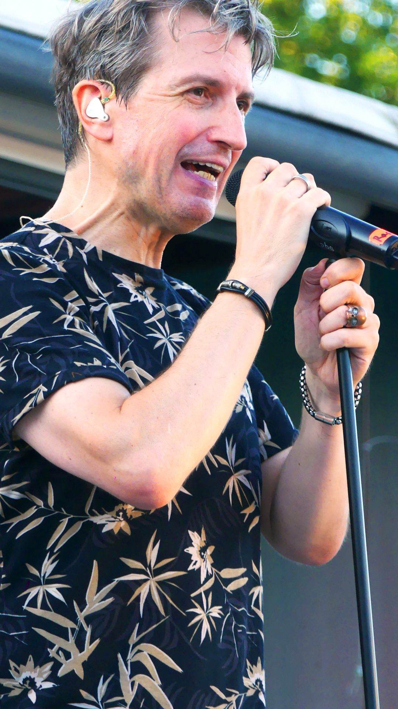
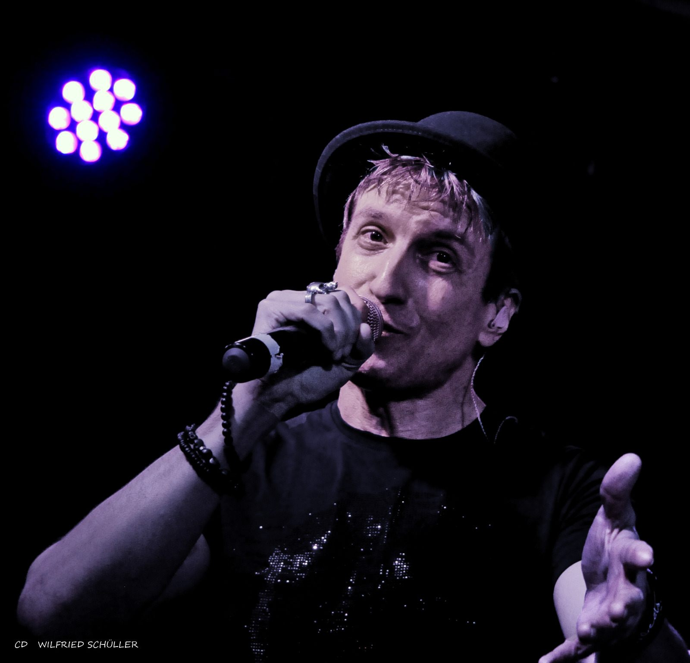
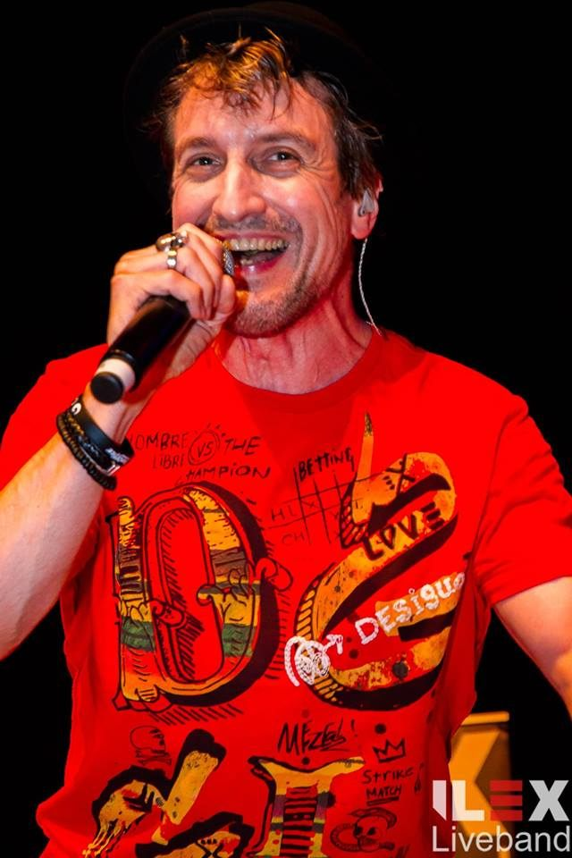

Sänger aus Köln · Live seit 1993
Raphael Romano
Stimme. Bühne. Gänsehaut.
Frontmann für Party- und Coverbands, Karneval, Schützenfeste und Events, und der Sänger, den man anruft, wenn's brennt.

Live erleben
Kein Playback, keine Show von der Stange. Einfach Stimme, Energie und ein Publikum, das mitsingt.


Dortmund ➜ KölnÜber mich
Mama war Beatles-Fan, Papa stand auf Elvis, und ich stand schon als Kind vor dem Spiegel und habe meine Idole kopiert.
Als Teenager habe ich als „Freddie Mercury“ mehrere Talentwettbewerbe gewonnen und parallel in Dortmunder Chören als 2. Tenor das Handwerk gelernt, oft mit Soloparts. Dann kam die Rockmusik, und sie hat mich nie wieder losgelassen.
Seit über 30 Jahren stehe ich auf der Bühne, seit 2017 professionell, von Rockclubs im Ruhrpott bis zu Bühnen in China. Seit 2010 lebe ich in Köln, und der Karneval ist längst ein Teil von mir.
„Mein Ziel ist immer, den Menschen eine schöne Zeit zu schenken.“
- Hohe Gesangsrange
- Natürlich & nahbar
- Holt jedes Publikum ab
- Ausbildung im Chor
Sänger ausgefallen?
Ich springe ein.
Krankheit, Terminpanne, Stimme weg: Ich übernehme kurzfristig, wenn nötig auch ohne Probe. Neue Songs lerne ich schnell, und Marathon-Gigs bis zu 10 Stunden sind für mich Alltag.
Bühnen-Stationen
Vom Ruhrpott über Tribute-Festivals bis nach China: eine Reise in Bands, Bühnen und Stimmfarben.
-
1993
Cruel Tears
Rock-/Bluesband aus Holzwickede, mit Coversongs und eigenem Material.
-
1995–2002
Matchless Noise
Dortmunder Rockband und feste Musikgröße im Ruhrpott.
-
2000
Spooky Jam
Klavier-/Gesangsduo im Bereich Chanson. 2001 Radioerfolg mit der Eigenkomposition „Already Dead“ auf DO 91.2 und Auftritt bei der Ruhrolympiade in Essen.
-
2002–2016
Global Beat
Coverrock-Band aus Hattingen. Highlight 2006: Grugapark Essen vor über 2.000 Zuschauern. Opener „Let me entertain you“ auf dem Sampler „Local Heroes“.
-
2008–2013
Livefields – Toto Tribute
Tribute-Festivals deutschlandweit, mit den Stimmen von Steve Lukather, Bobby Kimball, Joseph Williams und Fergie Frederiksen.
-
2010
Umzug nach Köln
Neue Heimat, neue Leidenschaft: Karnevalsmusik.
-
seit 2017
Partyinferno
Renommierte Partyband, Auftritte deutschlandweit, in Europa und Übersee. Parallel bei „Pearls“ (2018–2020) und der „Ilex-Liveband“ (2021–2024).
Repertoire & Sprachen
Von Queen bis Toto, von Rock-Hymnen bis Kölsche Tön: Ich singe, was die Party braucht.
Platzhalter: Hier kann später eine Songliste (PDF) oder eine Auswahl der beliebtesten Titel stehen.
Nächste Auftritte
Platzhalter: Die Termine unten sind Beispiele und werden später durch echte Auftritte ersetzt.
-
11NovKarneval
Sessionseröffnung
Köln · mit Partyinferno
-
06DezEvent
Firmen-Weihnachtsfeier
Düsseldorf · Privatveranstaltung
-
31DezParty
Silvester-Party
Ort folgt
-
12FebKarneval
Weiberfastnacht
Köln · Altstadt
Pressemappe
Vita, Fotos in Druckqualität, technische Infos und Rider in einem Paket, für Veranstalter, Agenturen und Presse.
Lass uns laut werden.
Band sucht Frontmann? Event braucht Stimmung? Oder Sänger ausgefallen und der Gig ist heute Abend? Schreib mir, ich melde mich schnell.
- NameRaphael Romano
- AdresseWaisenhausgasse 5, 50676 Köln
- E-Mailraphael.romano@gmx.de
- Instagram@raphael_romano_music